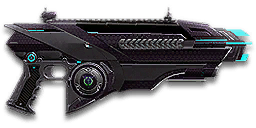

← Back to the Solstice Burst comparison
Sage Guide · Vanu Sovereignty · Light Assault & Engineer
The Vanu Sovereignty's burst-fire carbine — 100 certs, and the cheapest accurate gun a new VS Light Assault or Engineer can buy. One trigger pull fires exactly three shots, and the first shot of each burst kicks less than the rest. Learn the rhythm and it out-shoots full-auto carbines at the ranges that matter.
The one-line verdict: a calm, precise carbine that trades a trigger finger for accuracy. It will not hose a room down — it wins by putting three tight shots exactly where you aimed, then doing it again. Fight between 10 and 40 metres and it will carry you.

The Solstice Burst · Vanu Sovereignty · 30-round battery magazine · 100 certs
* 698 RPM is the fastest possible rate — three shots at 86 ms apart, re-pulled instantly. Your real fire rate is lower, because your finger has to re-pull the trigger for every burst. Section 04 explains.
Picture the scene, because you've probably lived it: you're sprinting across a courtyard, an enemy appears, and you do everything at once — hold the trigger down while you're still running, then press aim-down-sights (ADS) a split-second later, finger still down. The sight picture snaps in, it looks precise… and your bullets spray everywhere except the man in your crosshair. He kills you. It feels like the game cheated. It didn't — here's what actually happened.
You started firing from a sprint, from the hip. Sprinting is the least accurate state in the game: your cone of fire starts at 7.0° — fully bloomed, the widest it can ever be. Every shot you fire from the hip widens it further still (+0.1° per shot).
Then you pressed ADS mid-hold — and nothing reset. Aiming down sights does not shrink a cone of fire that is already bloomed. The scope only gives you a precise picture; the bullets keep flying out of the wide cone you built while running and hipfiring. That's the whole mystery: accurate-looking aim, wildly inaccurate gun.
Two timers stack the deck further: your gun needs about 0.3 s to settle after a sprint, and raising the sight itself takes ~0.15 s. Trigger held through all of it means your first half-second of fire is pure confetti.
1 · Feet. Let go of sprint (and the trigger, if you're already holding it). Stop, or drop into a strafe — anything but a full sprint.
2 · Sight. Press ADS and let the sight come up. This takes a heartbeat — that's fine, take it behind cover.
3 · Trigger. Now fire — one pull, three shots. Starting from the aimed cone of 0.06°, your first burst lands where the dot points, and you control the bloom from zero instead of inheriting a maxed-out cone.
Stop → aim → fire. If you take one habit from this entire page, take this one. You'll practise exactly this rhythm in the simulator in section 04.
Four beats, left to right — the same mistake the cards above describe, drawn out.
1 · SprintingYour cone starts maxed at 7.0° — the widest it can ever be.
2 · Trigger heldFiring from the hip while running — every shot adds bloom.
3 · ADS, mid-holdThe sight looks precise — but aiming down sights does not reset bloom.
4 · The sprayBullets fly out of the wide cone you built. The enemy walks away.
Same fight, done right. Each beat has a job, and the order is the whole lesson.
1 · StopLet go of sprint (and the trigger). About 0.3 s for the gun to settle.
2 · AimPress ADS and let the sight come up (~0.15 s).
3 · FireNow fire — from the aimed cone. First shots land where the dot points.
The exception — under ~8 m, skip the whole danceHipfire works, no ADS needed, and stopping is optional. Keep moving, strafe, and let the hipfire ring do the work.
Every enemy infantry has 1,000 health (500 shield + 500 health). Your bullet does 143 damage up close, fading to 112 at long range. Headshots count double, leg shots count less (×0.9). That gives you three numbers worth memorising:
| Range | Damage | Head | Chest | Legs | Chest vs shielded Heavy |
|---|---|---|---|---|---|
| Close · 0–10 m | 143 | 4 | 7 | 8 | 11 |
| Mid · 10–39 m | 143→125 | 4 | 8 | 9 | 12 |
| Far · 39–60 m+ | 125→112 | 5 | 9 | 10 | 13 |
Perfect-accuracy times to kill: 4 headshots ≈ 0.26 s, 7 chest shots ≈ 0.52 s up close. In real fights you'll land maybe half your rounds — still, this is why the head matters so much on this gun. Best-case chest times: 0.52 s close, 0.60 s mid, 0.69 s far. (Times assume perfectly timed trigger pulls, 86 ms between shots; your real kills are a little slower, because your finger has to re-pull for every burst.)
Full power to 10 m, then a steady slide to minimum at 60 m. The teal line shows High Velocity Ammunition, which stretches minimum damage out to 80 m.
One gun, four fighting styles. The right technique changes with distance — use the range finder below to see what your bullets do at any range, then learn the four bands underneath it.
How to fight hereAim down sights at the upper chest and neck. Fire one burst, pause, fire the next — your recoil climbs into the head for free damage.
Aim: centre of the chest, from the hip. Keep moving.
Scoping in costs you time and halves your move speed — at arm's length that gets you killed. Inside ~8 m your moving hipfire ring is only about 0.35 m wide, still roughly chest-sized, so bursts land. Strafe side to side (A/D) while firing so you're hard to track, and break line of sight to recover after the fight.
Aim: neck / upper chest. One 3-round burst, pause, next burst.
This is where the gun earns its keep: near-full 143 damage, a tight 0.06° starting cone, and the first shot of every burst kicks less than the rest. Start your crosshair at the neck — the natural upward climb walks shots two and three into the head, and 4 head hits end the fight in about a quarter of a second. Strafe while scoped; you're slower, but a moving target still beats a still one.
Aim: chest. Volleys of 5–6 rounds (two quick bursts), pause between them.
Damage is sliding toward 125 and your cone of fire grows with every shot. Fire a volley, release for a split second to let accuracy reset, fire again. The recoil drifts up and to the right (14–16°), so pull your mouse gently down and to the left. Crouch or stand still when you can — both tighten your shots.
Aim: chest. Single bursts, at exposed targets only.
At 112 damage you need 9 chest shots — a long, loud advertisement of your position. Take these shots at stationary or fleeing targets, medics reviving, and engineers on turrets. Otherwise, your better play is to close the distance behind cover. Knowing when not to shoot is a skill too.
Your accuracy is decided by two things before skill even enters it: what your body is doing (your stance sets the starting cone of fire) and what your finger is doing (every shot grows that cone). This gun has no fire-mode switch at all — it fires 3-round bursts and nothing else. There is no full-auto mode to fall back on, so the burst is the gun: learn it first and the rest follows.
| Stance | Starting cone | What it means for you |
|---|---|---|
| Sprinting | 7.0° | Maxed out — the widest the cone can be. This is the section 01 disaster: never start firing from a sprint. |
| Hipfire, moving | 2.5° | Walking or strafing from the hip. Fine inside ~8 m, leaks rounds past the target beyond it. |
| Hipfire, standing | 2.0° | Your point-blank default. The 0.28 m ring at 8 m in section 05 is this stance drawn out. |
| Hipfire, crouched | 1.5° | The tightest hipfire you have (2.0° if you crouch-walk). Crouch when holding a doorway from the hip. |
| Aimed (ADS), feet planted | 0.06° | Standing or crouched makes no difference here — about thirty times tighter than hipfire. This is why section 01's order matters. |
| Aimed (ADS), strafing | 0.125° | Twice as wide as planted (0.075° if you crouch-strafe), but still sixteen times tighter than hipfire — and you move at half speed (0.5×). Strafe between bursts to stay hard to hit; plant your feet during each burst. |
| Mode | How your finger does it | Use it at |
|---|---|---|
| One burst — the gun's unit | One trigger pull fires 3 shots, 86 ms apart, then the gun stops | Everything. This is the only way the gun fires in burst mode — every kill is built from these 3-shot groups. |
| Volleys — the default | Fire one or two bursts (3–6 shots), release ~0.2 s, fire again. 5 rounds is the ideal volley; 6–8 is fine while you're learning | Almost everything, 10–50 m. Each release resets the cone, so every volley starts at 0.06°. |
| Mashing the trigger | Re-pull as fast as you possibly can, burst after burst | Point blank only. Perfect timing reaches 698 RPM — but a real finger is slower, and the cone never resets, so past a few bursts you're spraying, not aiming. |
One more rhythm worth knowing: standing still, your first aimed shot is the free window — after 1 shot your cone has grown to 0.11°, just under the 0.125° moving minimum, and the second shot already pushes past it (0.16°). So there is barely a still window at all: strafe between bursts from the start. The cone still grows during that first shot; the window is about the switch to moving, not about bloom pausing. (This is the Ideal ADAD rhythm: 1 free still shot, then move.) From the hip the window is roomier — standing still, 5 shots before your cone reaches the 2.5° moving floor — which is why hipfire bursts stay honest point-blank even while you strafe.
Why the burst kicks less: most automatic rifles kick harder on the first shot of a burst (a 1.5×–3× multiplier). This gun is the opposite — its first shot kicks only 0.75×, a quarter less than the shots after it. Every burst starts gentle and then climbs. That is the gun's whole personality: the first shot is the free one, so make it count.
A target 30 m away, aiming down sights. Press and hold FIRE (mouse, touch, or hold Space with the button focused) and watch the holes land in groups of three — that's the gun firing its 3-round bursts, 86 ms apart, with a short re-click beat between bursts (the fastest a perfect trigger finger can re-pull, which is how the gun reaches 698 RPM). The holes walk wider the longer you hold, because every shot grows the cone. Release, let the cone reset, fire again. Aim for volleys of 5 rounds; 6–8 is tolerable while you're new. This practice window is shared by the whole Sage series: it's driven by a weapon profile plugged into the window — here the Solstice Burst's (698 RPM, 0.06° starting cone, 0.05° bloom per shot, target at 30 m) — and the spread is drawn at true scale from those numbers.
Cone of fire — fills as you hold, empties when you release.
Your volleys will be graded here — green at 5 rounds, tolerable up to 8.
Some things are easier to show than to say. Here's what your bullets actually do: how wide hipfire spreads at 8 metres, what a good burst rhythm looks like, and what the 2x sight really changes. The hands-on version — holding the trigger yourself — is the practice window in section 04.
A full-size target 8 m away — an arm's-length room fight. The rings show where hipfire rounds land around your aim point (the chest). Sizes are drawn to scale from the gun's real cone-of-fire numbers.
Read it this way: standing still, the 0.28 m ring sits well inside the chest — most rounds hit a target this size, which is why hipfire works point-blank. But move and it grows to 0.35 m — still about chest-wide at 8 m, and about 0.44 m at 10 m — so the edge rounds start leaking past him as distance grows, and the rings only grow with distance while the man doesn't. Past ~10 m that's rounds missing entirely: the exact moment to switch to aiming down sights, where the spread shrinks to a dot. (Ring sizes use the real geometry: spread diameter = 2 × distance × tan(cone ÷ 2).)
Every shot widens your cone of fire ("bloom"). Releasing the trigger for a heartbeat resets it. Same 18 rounds, two very different outcomes:
The target pattern is volleys of about 5 rounds — that's the ideal. Volleys of 6–8 are fine while you're new (call it newbie tolerance). On this gun a volley of 6 is two full bursts, the natural unit — one burst plus the first two shots of the next gets you to 5. Past that, the bloom (0.05° per shot aimed, 0.1° from the hip) keeps growing with every shot, so the extra bullets mostly decorate the wall behind your enemy instead of hitting him. Short volleys also leave you rounds for the second enemy — remember, the magazine is only 30.
No zoom. The target at 35 m is small but the view is wide open — you see the crate, the tower, and the next enemy coming. Fast to aim, nothing blocks your edges. Best inside ~40 m.
Same target, same 35 m — but he looks twice as tall, so placing shots on his chest and head gets much easier. The price: your view narrows to the round window, the crate and tower are gone, and close targets feel fast and huge. Best at 25–50 m.
That's the whole 30-cert decision from section 06 in one picture: 1x for awareness, 2x for precision. Most veterans carry both and swap per base — indoors 1x, open ground 2x.
Good news: nothing on this gun is mandatory — it shoots straight out of the box. The gun itself costs 100 certs to unlock — one of the cheapest guns in the game; after that, your most important buys are cheap: the two reflex sights (30 each), the Forward Grip (100), High Velocity Ammo (100). Buy in the order shown and stop whenever the gun feels right. One thing this gun can never mount, so don't go looking for it: Soft Point Ammunition — unlike most carbines, the Burst has no soft-point option, so its full-damage range stays at 10 m.
A clean dot-and-circle reticle sight with no zoom. Your default, and honestly your best all-round option.
Good: everywhere indoors and out to ~40 m — which is most PlanetSide fights.
Bad: picking out targets past 50 m; that's what the 2x is for.
Doubles your view magnification. Costs almost nothing — the price of a few kills.
Good: open-field bases, tower fights, and your 25–50 m burst game. Swap between 1x and 2x per fight.
Bad: tight indoor rooms — the zoom makes close targets feel fast and huge.
Night-vision sight: enemies glow white against a dark view, and it sees through smoke.
Good: night fights, smoky doorways, spotting infiltrators by their outline.
Bad: daytime and long range — its view is short-ranged and washes out in bright light.
VMS / V3 Holo (3.4x) and OG-4 / CSZ (4x) — sniper-style magnification on a burst rifle.
Good: almost nothing a beginner does — recoil magnifies too, and tunnels your vision.
Bad: any fight inside 30 m, which is where you'll spend your first hundred hours.
The burst's recoil is already gentle, and the first shot kicks less than the rest. Plenty of veterans run this slot empty forever.
Good: your first weeks. Spend certs on your class tool (jump jets or repair tool) and suit slots first.
Bad: nothing — there's no downside to an empty slot.
Cuts aimed bloom by 20% (0.05° → 0.04° per shot), so your bursts stay tight longer. Costs you: aiming movement slows by 20% (0.5× → 0.4×).
Good: the Marksman build in section 07 — long lanes where you plant your feet and burst at range.
Bad: run-and-gun play — the slower strafe makes you an easier target up close.
Hipfire bloom grows 40% slower — much steadier hip spraying. But vertical recoil rises 20% when you do aim.
Good: a dedicated close-quarters build paired with the Laser Sight.
Bad: general play — it taxes the aimed shooting you'll do most.
You vanish from the minimap when firing and your shots are quiet. In exchange, damage starts dropping off 20 m sooner (minimum damage at 40 m instead of 60 m) and bullets fly 15% slower (540 → 459 m/s) — harder to lead moving targets.
Good: flanking behind enemy lines, rooftop and tree work, solo play behind the front.
Bad: front-line fighting where everyone already knows where you are — you pay the damage cost for stealth you don't need.
Hides your muzzle flash so your own view stays clear at night — but you appear on enemy minimaps from 15 m farther away.
Good: night fights where your own flash blinds you. A comfort pick, nothing more.
Bad: as an early purchase — it changes no fight outcome. Buy it last, if ever.
Cuts vertical recoil by 30%, so your bursts climb less. Costs you: hipfire cone grows 15% wider, and you show on the minimap from 35 m farther away.
Good: aimed mid-range bursts — the vertical climb is the main thing you fight on this gun, and this trims nearly a third of it.
Bad: hipfire-heavy play and stealthy flanking — the wider hip cone and the bigger minimap blip both work against you.
Cuts side-to-side recoil by 25%, keeping your bursts on a single target. Tiny cost: weapon swap is 0.15 s slower.
Good: the default for aimed, mid-range play — leave it on until you deliberately build for hipfire.
Bad: nothing meaningful. It only stops helping if you never aim down sights.
Hipfire accuracy improves by a third (33% tighter cone). Replaces the Forward Grip — you can't have both.
Good: indoor point-holds and stairwell fights where you hipfire inside ~10 m.
Bad: open bases — you give up aimed recoil control for a bonus you rarely use.
The first shot of each burst kicks 60% less — but side-to-side recoil rises 10% on everything.
Good: disciplined burst fire at 40 m+, where every burst starts fresh.
Bad: as an early buy — on this gun the gain is smaller than usual, because the first shot already kicks 25% less (0.75×). The trade rarely pays for a beginner.
A torch whose beam reveals cloaked infiltrators. Toggle it with the attachment key (X by default).
Good: hunting a stalker infiltrator camping your capture point — sweep corners with it.
Bad: as your everyday rail — it gives zero accuracy help, and the beam advertises your position.
Bullets fly 10% faster (540 → 594 m/s) and minimum damage now reaches to 80 m instead of 60 m (the teal line on the chart above). Cost: full damage only reaches to 8 m instead of 10 m.
Good: nearly always — faster bullets mean less lead on runners, and the extra 20 m of falloff range covers most of your fights.
Bad: almost nothing. The 2 m of lost full-damage range is the cheapest trade on this page.
Six more rounds per magazine — 36 instead of 30, two whole extra bursts. Costs you: the gun takes 15% longer to equip and unequip.
Good: multi-kill fights and point holds, where the extra burst is the difference between a second kill and a reload.
Bad: nothing serious — the slower swap only matters if you switch weapons mid-fight. A solid buy once the sights and grip are yours.
Costs below are attachments only — the Solstice Burst itself costs 100 certs to unlock.
0 certs · Day one
What the game hands you after the unlock. Genuinely good — learn the burst rhythm on this before spending anything.
260 certs · Recommended
The best value in this whole guide. Covers every fight from a doorway to a tower courtyard.
230 certs · Indoor brawler
Built to hipfire down stairwells and hold a capture point room. Swap back to the All-Rounder outdoors.
230 certs · Flanker
No minimap blip, quiet shots, tight hipfire for the kills you take from behind. Weak in a fair fight — so don't take fair fights.
230 certs · Long lanes
Plant your feet, burst down a lane, and let the tight cone and gentle first shot do the work. The slower ADS strafe is the price — don't take this one into a stairwell.
The gun fires in bursts whether you like it or not. Your skill is the pause between bursts: fire, let the cone reset for a heartbeat, fire again. Mashing the trigger as fast as you can feels busy and looks impressive, but the cone never resets and your later bursts go wide. Calm re-pulls kill faster than frantic ones.
Headshots deal double damage: 4 kills up close versus 7 to the chest. Don't aim at the head directly — aim at the neck and let the gun's natural upward climb carry shots two and three into the skull. It's the single biggest damage upgrade you own, and it's free.
Section 01's rhythm, every single fight: feet first, sight second, trigger third. A burst fired from a maxed-out sprint cone is three wasted bullets — and with only 30 in the magazine, you can't afford to waste them.
Reloading with even 1 bullet left takes 1.65 s; an empty gun takes 2.28 s. Count roughly: after two kills or ~15 rounds, duck behind cover and reload early. Treat the last 10 rounds as your emergency reserve, not your working magazine.
Walk with your crosshair at head height, pointed where an enemy's head will appear — a doorway edge, a corner, stairs. Most beginners lose fights in the half-second spent dragging the crosshair onto target. While firing, tap A/D to strafe between bursts: on this gun the strafing cone (0.125°) is barely wider than the planted one (0.06°), so moving costs you almost nothing.
Your damage, accuracy and burst rhythm all shine at close-mid range. Sprint between cover, use buildings and rocks as stepping stones, and arrive at your range before opening fire — as a Light Assault, your jump jets put you on rooftops the enemy never checks; as an Engineer, your turret and ammo pack make any lane yours. The player who chooses the range usually wins the duel — make it you.
Every gun has a price. Here's where the Solstice Burst pays — and the habit that covers each hole.
There is no full-auto mode. Perfect re-pulls reach 698 RPM, but a real finger is slower — and while you're re-pulling, a full-auto rifle just keeps firing. In a straight hold-the-trigger trade up close, the other gun's bullets add up faster than yours.
Play around it: don't trade mag dumps. Peek, burst, and break line of sight — your tight groups and gentle first shot win fights that start on your terms, not theirs.
30 rounds is about four kills at best. Two kills and a few misses and you're reloading — and a 1.65 s reload in the open is a dead Light Assault. The Extended Magazine (+6 rounds, 36 total) helps, but it costs 100 certs and slows your weapon swap.
Play around it: burst discipline (habit 1) and early reloads (habit 4). Never start a second duel on a half-empty magazine if you can help it.
The free Solstice VE3 fires the same 143-damage bullets at the same 698 RPM, so the Burst kills in exactly the same time — 0.52 s close, 0.60 s mid, 0.69 s far to the chest. What the 100 certs buy is handling, not damage: a 0.06° aimed cone against the starter's 0.10°, a first shot that kicks at 0.75× instead of 2.8×, and 540 m/s bullets instead of 515.
Play around it: buy it for the handling — the tighter cone, the gentler burst — and only after your class tool and suit are in decent shape. If you only want kills per cert, the starter already does the job.
At 2.0° standing and 2.5° moving, your hipfire cone is wide. Inside ~8 m you're fine; past that, hipfire leaks rounds.
Play around it: don't hipfire-duel at 15 m — that's where the other rifles live. Aim down sights from 10 m out, where your 0.06° cone and low bloom take over.
Past 60 m you're at 112 damage: 9 chest shots, 13 against a shielded Heavy, with bloom fighting you the whole way. Snipers and battle rifles own that ground.
Play around it: tap-fire single bursts at exposed targets only, and spend the rest of the time closing distance. High Velocity Ammo stretches your falloff to 80 m — a cheap fix, and the only ammo this gun takes.
Its recoil angle is 14–16° rightward. In a long volley your aim walks off the target's right shoulder — you'll see this clearly in the VR drill below.
Play around it: pull your mouse down-left while firing, in the opposite direction of the climb. The Forward Grip already trims the sideways part by 25%, and the first shot of each burst kicks less to begin with.
Open the world map, travel to VR Training, and run these on the target dummies. Five minutes before a play session beats an hour of dying confused.
Aim at a wall 20 m away and empty a full magazine in single bursts without touching the mouse. Watch each 3-shot group climb up-right (14–16°) — that's your gun's fingerprint. Repeat, this time pulling down-left, until the groups stay fist-sized.
Walk the dummy range keeping your crosshair glued to neck height the whole time, snapping to each new target without dipping to the floor or sky. Slow and clean first; speed comes on its own.
At 30–40 m, kill dummies with single 3-round bursts, pausing fully between bursts. Then try two-burst volleys. If a volley goes wide, shorten it. Goal: whole kills without a single wild round.
Pick a dummy, stand 5 m away, and circle it with A/D while hipfiring it down in bursts without stopping. This is your point-blank survival skill — the one that fires while your movement does the defending.
Fire exactly 20 rounds, step behind a pillar, reload, repeat. Train your hands to reload early and only in cover until it's automatic — in real fights you'll do it without thinking, which is the point.